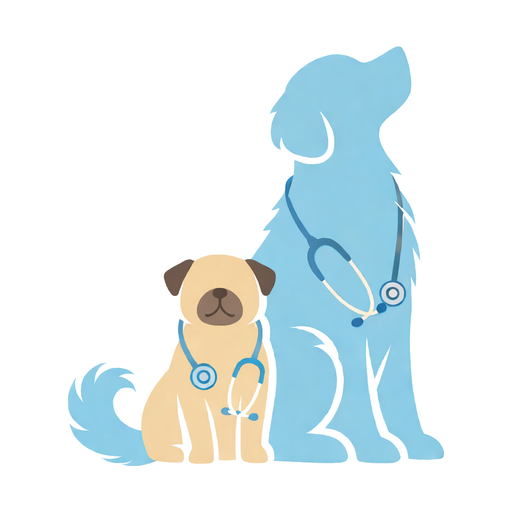

DoggyDocGuarda su ficha, su historial médico y sus medicamentos, y recibe un aviso cada vez que toque darles una dosis. Gratis y sin publicidad.
⬇ Descargar para AndroidFoto, raza, fecha de nacimiento, color, microchip y notas de cada una.
Registra cada control y mira su evolución en un gráfico.
Consultas con código, fecha, doctor, lugar, imágenes y tratamiento.
Varios medicamentos por atención, con dosis, frecuencia y duración.
Desparasitaciones, pipetas y vacunas con la frecuencia que elijas.
Avisos aunque la app esté cerrada, con botones "Dado" y "Posponer".
Veterinarias, parques y lugares pet friendly a tu alrededor, con cómo llegar.
Inicia sesión con Google y sincroniza con tu propio Google Drive.
Se guardan en tu teléfono y, si quieres, en tu Drive. Nadie más los ve.
Para actualizar, descarga la versión nueva desde esta misma página e instálala encima: no se borra nada.
Si tu teléfono es Xiaomi, Huawei o Samsung, quita DoggyDoc del ahorro de batería para que los avisos lleguen a tiempo.